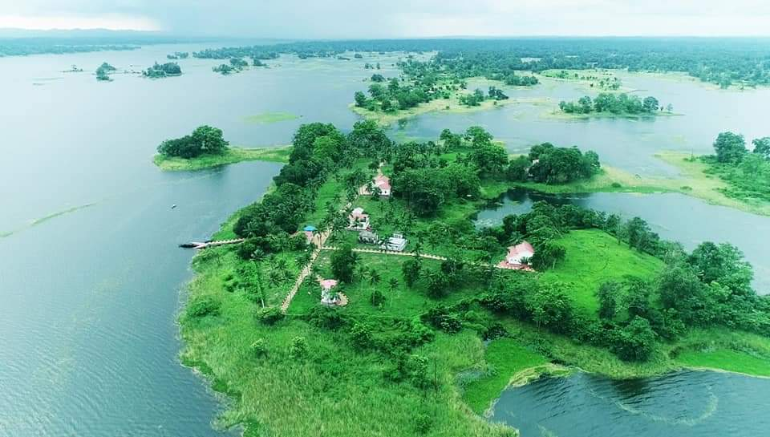

Tourists Spots in TRIPURA

tourists spots
- Tripura Government Museum
Tripura Government Museum or the Tripura State Museum, is a multicultural museum with emphasis on art and crafts of the state of Tripura; established on 22 June 1970 and shifted to the Ujjayanta Palace on 25 September 2013 with an official inauguration held by Hamid Ansari, former Vice president of India. It is North-east India's largest museum with a "National perspective while remaining focused on Tripura and northeast India".
Tripura Government Museum
Tripura Government Museum is located in Tripura ,Tripura Government Agartala, India
The Ujjayanta Palace ( Nuyungma in Tripuri language ), has been hosting the state museum since 2013, situated in Agartala, the capital city of Tripura. The museum houses a rare and exclusive collection of archaeological items; sculptures, Terracotta, Bronze Images, Coins of the Tripuri kingdom, paintings and other historical items which are excavated from the other historical places of Tripura.
UJJAYANTA PALACE
Features
The museum had four exclusive halls when it was located in the center of the Agartala city. It was shifted to the new premises in September 2013 to the heritage palace where there are now 22 display galleries. The exhibits in the museum are of archaeological antiquities, historical Indian sculptures, paintings and tribal culture. The museum has 1406 collections on display which include 79 stone sculptures, 141 terracotta plaques, 774 coins of gold, silver and copper, 10 copper plate inscriptions, 9 stone inscriptions, 39 images of bronze, 102 textile items, 58 Oil paintings, 63 sketches and drawings, and 197 ornaments. The sculpture collections are mostly from Udaipur, Pilak, Jolaibari, and other locations in Tripura.[1] The new museum also showcases the customs and practices of different social units of Northeast India. The objective of the museum is also to make it a "centre for active research and cultural activities".
TRIPURA state TRIBAL MUSEUM
The most distinctive exhibits are from Pilak, which consist of sculptures of different cultures of Hinduism and Buddhism from the period of 9th to 13th centuries. The well crafted and molded bronze sculptures are of Mukhalinga, Avalokitesvara, Tara, and Vishnu. The terracotta exhibits are from the Pilak and Amarpur sites, and also from Bengal school; represents folk arts of Pilak and subjects related to mythology, flowers and animals, etc.
- Sepahijala Wildlife Sanctuary
Sepahijala Wildlife Sanctuary is one of the best wildlife sanctuaries in Tripura. It covers an area of about 18.53 square kilometers (7.15 sq mi), located about 25 kilometers (16 mi) from the city center of Bishalgarh. It consists of an artificial lake, natural botanical garden and magical garden. It is famous for its “Clouded Leopard enclosure”. The sanctuary houses a variety of birds, top class mammals, and other animals.
It is surrounded by lush green landscape throughout the year and the weather is carried here as two humid summer months in March and April without seasonal temperatures. It is a shelter for different species of birds. Four species of Fyre langur (rhesus macaques, pig-tail macaques, scalloped langurs and spectacled langurs) belong to the zoological division of this unique tactile monkey. The crab-eating mongoose (which was last seen in the 1930s) has also been revived here.
RED PANDA
The sanctuary has also been developed as a wildlife sanctuary and an academic and research centre. About 150 species of birds live in the vicinity and migratory birds visit in winter season. Established in 1972, the sanctuary has five departments: Wildlife, Zoology, Uncover, Reptiles and Birds.
SEPAHIJALA WILDLIFE
There is a residence in the forest where the botanical garden, zoo and boat house are located. A Dak bungalow called Abasharika, located near the lake, beckons for a night adventure in the middle of the forest which is a wonderful experience.
- Dumboor lake
Dumboor Lake is a beautiful and serene freshwater lake in the state of Tripura in northeastern India. The lake is situated in the remote and picturesque district of South Tripura, approximately 120 kilometres away from the state capital Agartala. The lake is one of the largest natural water bodies in the state, covering an area of around 41 square kilometres and is surrounded by lush green forests and hills.
The name "Dumboor" is derived from the word "dumber", which means "drum" in the local Kokborok language. It is believed that the lake was formed in the shape of a drum, considered a sacred instrument in tribal culture. The lake is also of great historical significance, as it is believed to have played a crucial role in the battle of Mahabharata.
DUMBOOR LAKE
Numerous small streams and creeks from the surrounding hills feed the Dumboor Lake. The lake is also home to several fish species, including Rohu, Catla, and Magur, which attract many fishing enthusiasts from nearby areas. The lake is also a popular spot for bird watching, as several species of migratory birds flock to the area during winter.
Tourists can enjoy various activities at Dumboor Lake, such as boating, kayaking, and canoeing. The calm and tranquil waters of the lake make it an ideal spot for water sports enthusiasts. The lake also has a beautiful island in the middle, which can be reached by boat. The island has several small temples and shrines, attracting devotees during the annual Amarnath Mela.
The surrounding hills and forests of Dumboor Lake also offer several trekking trails and nature walks, allowing visitors to explore the stunning natural beauty. The hills are covered with dense forests of sal, teak, and bamboo, home to several species of wildlife, including elephants, leopards, and monkeys.
Dumboor Lake is a natural wonder and a must-visit destination for anyone travelling to Tripura. Its serene beauty, rich history, and diverse wildlife make it a perfect spot for nature lovers, adventure enthusiasts, and history buffs.

DUMBOOR LAKE
- Unakoti
Unakoti is a chiselled wonder hidden in plain sight. Some 178 kilometers from Agartala in Tripura’s Unakoti district, an ancient stone gate opens into massive stone and rock sculptures carved out of a hillside.
Serpentine bridges and broken staircases run between the slopes, and a 30-feet tall Shiva’s head, called Unakotiswara Kal Bhairava, stands flanked by sculptures of goddesses—Ganga sitting on a capricorn and Durga standing on a lion. Figures of Hanumana, Ganesha, Ravana and other deities from Hindu mythology are sculpted to perfection. Camouflaged by the dense forests of Jampui Hills, the heritage site stands as a known but forgotten treasure of India. It is called the “Lost Hill of Faces”, and rightly so.
UNAKOTI
There was a time, ages ago, when the land of Unakoti was a thriving site of worship. Streams and rivulets flowed by the foothills, the smell of incense lay heavy in the air, and thousands of believers thronged the site for worship. The place had been famous as a Shaivite pilgrimage site from the eighth or ninth century CE until its gradual decline in the modern world. Crafted by expert artisans, the stone sculptures brought the region’s local legends to life. An annual celebration of the Ashokastami Mela every April is the only marker of its former importance.
- Jampui Hills
Jampui Hills is situated about 200 Km. away from Agartala and is the highest hill range in the state bordering Mizoram. This permanent seat of eternal spring is situated at an altitude of 3000’ above sea level. During November every year, the unique Orange & Tourism festival is celebrated in the Jampui hill. A large number of tourists, both domestic and foreign, participate and enjoy this festival. The rainy season is no less charming. During this season the hill is covered with floating clouds and it provides a rare experience for the tourists. The formation of clouds at the bottom of the hill range and its gradual ascendance from the bottom to the top slowly engulfing the whole hill range in its mystic lap is an experience to treasure.
The view of rising and setting sun from various viewpoints in Jampui hills is a wonderful sight for the tourists. Tourists visiting the Jampui hill cannot afford to miss the view of the sunset and the sunrise. Various viewpoints in the hill range provide excellent panoramic views of the valley and villages of Mizoram. From the watchtower at the highest peak, Betlingchip(3200 feet high), the Chittagong Hill Tracts, the Kanchanpur – Dasda valley other hill ranges of Tripura and Mizoramunfold an enigmatic scenic vista.
Tourist Department of Government of Tripura has constructed one very modern tourist lodge- ‘Eden Tourist Lodge’ at Vanghmun village in the Jampui hills which has a capacity of 20 persons and is well equipped with all modern amenities. In addition, local hospitable Mizo people also extend “Paying Guest” Accommodation facilities in their houses.
JAMPUI HILLS
For facilitating the visit of tourists to Jampui hill, Tourist Department, Government of Tripura is organizing various package tours from the capital town of Agartala. Jampui hill is a real tourist paradise which attracts a large number of tourists with its virgin forests and peaceful and eco-friendly ambience including beautiful orchids and colourful dance & music. Being sparsely populated it provides an ideal opportunity for leisure tourism.
- Neermahal
NeerMahal is a palace on water. The word ‘Neer’ in Sanskrit and Bengali means water whereas ‘Mahal’ means Palace, the water palace is located in the middle of Rudra Sagar Lake at a place named Melaghar, 55 Kilometers from Agartala. The palace was built by Maharaja Bir Bikram Kishore Manikya Bahadur, who was the king of Tripura. Work on the palace started in 1930 and was completed in 1938. The Mahal is also known as the ‘Lake Palace of Tripura’.
NeerMahal was constructed for the summer residence of the Royal Family.The Palace is divided into two parts - east and west. The western side of the palace was made for the leisure of the Royal Family and it's known as the AndarMahal, the eastern side is an open-air theatre, where dance and other cultural events were organized for the enjoyment of the Royal Family. The palace has a total of 24 Rooms.In India, there are only two Water Palaces, one is at Jaipur in Rajasthan known as ‘Jal Mahal’ and the other is at Tripura’s, Neer Mahal.
NEERMAHAL So, as it is a unique identity the mahal is a well-known tourist palace in Tripura. Since the palace is surrounded by the Rudra Sagar waterbody, a boat is the only mode of transport to enter here. Even at the time of the Maharajas, the palace used to be visited on a hand-powered boat from Rajghat. Twice every year a popular festival named ‘NeerMahal Water Festival’ is organised here in August and December. The festival is held for 3 days and many cultural programs and events are organized.
A Boat Race is organized in the Rudra Sagar Lake as part of the festival. Different types of boats take part in the race and many people come here to watch the race.How to ReachMelaghar is a little over an hour's drive from Agartala. The Rudra Sagar lake and Neermahal can be visited as a sightseeing tour from Agartala or you may stay at the accommodation available near the lake. In either case, the mode of transport to reach here is the same as that for Agartala
Know More about the State